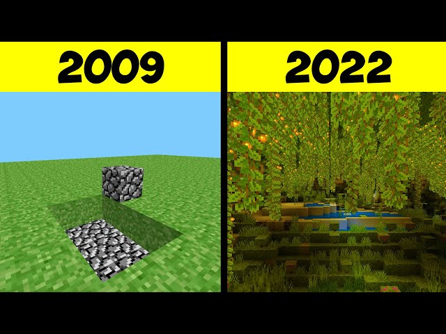
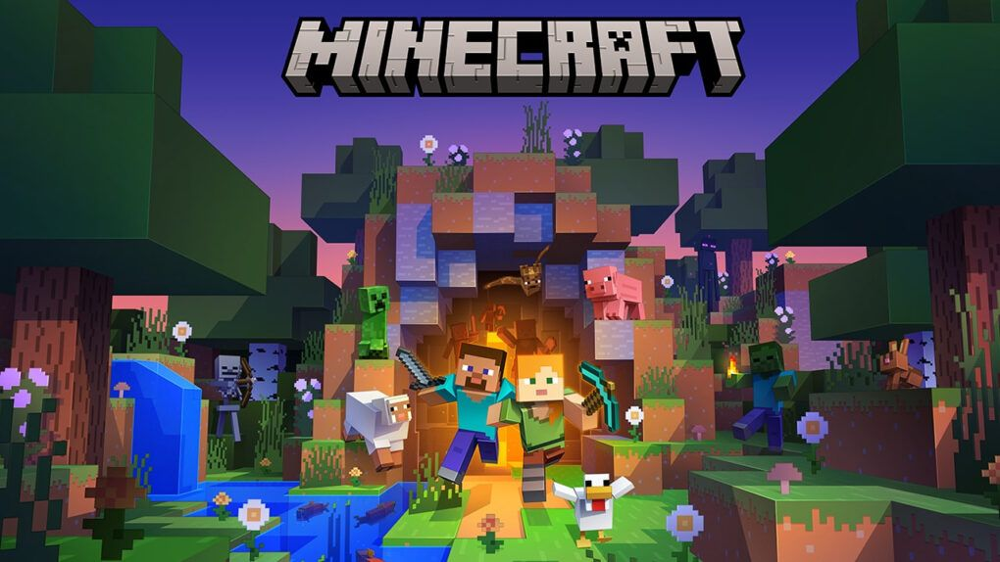
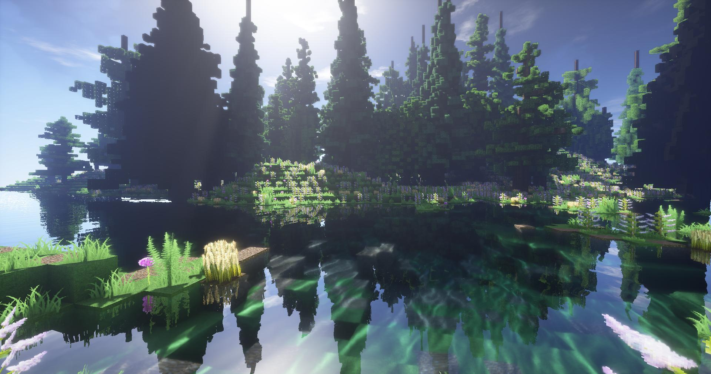

Sejarah Minecraft

Minecraft adalah sebuah permainan sandbox yang dikembangkan oleh
pengembang permainan asal Swedia Mojang Studios. Permainan ini
dibuat oleh Markus "Notch" Persson dalam bahasa pemrograman Java.
Setelah beberapa versi pengujian pribadi awal, permainan ini pertama
kali diterbitkan pada Mei 2009 sebelum sepenuhnya dirilis pada
November 2011, kemudian Jens "Jeb" Bergensten mengambil alih
pengembangan. Permainan ini adalah salah satu yang terlaris
sepanjang masa, terjual lebih dari 238 juta kali dan dengan lebih
dari 140 juta pemain aktif bulanan.
Fitur Utama

Pemain dapat membangun struktur dan dunia dengan blok-blok yang
dapat mereka pilih, memungkinkan ekspresi kreatif tanpa batas.
Eksplorasi Dunia Terbuka
Dunia Minecraft sangat luas dan beragam, dengan berbagai jenis
biome, hewan, dan sumber daya yang dapat ditemukan.
Crafting dan Pengumpulan Sumber Daya
Pemain perlu mengumpulkan berbagai sumber daya dari lingkungan dan
menggunakannya untuk membuat alat, senjata, dan barang-barang
lainnya.
Bertahan dan Bertahan Hidup
Mode bertahan hidup menantang pemain untuk membangun tempat tinggal,
berburu makanan, melawan monster, dan menjaga kesehatan agar tetap
hidup.
Mode Kreatif dan Bertahan Hidup
Pemain dapat memilih antara mode kreatif (tanpa batasan sumber daya)
dan mode bertahan hidup (melawan bahaya dan mengelola sumber daya).
Mode Permainan

Pemain harus mengumpulkan sumber daya, membangun tempat tinggal,
melawan monster, dan menjaga kesehatan serta kelaparan. Mode ini
menitikberatkan pada elemen bertahan hidup dalam dunia yang penuh
tantangan.
Mode Kreatif
Mode ini memberikan akses penuh terhadap semua sumber daya dan item
dalam permainan. Pemain dapat membangun tanpa batasan sumber daya,
membuat struktur yang rumit, dan mengekspresikan kreativitas tanpa
kendala.
Mode Petualangan
Mode ini dirancang untuk pengalaman naratif di mana pemain dapat
menjelajahi dunia, berinteraksi dengan karakter, dan mengikuti
cerita yang telah dirancang oleh pembuat peta.
Mode Peta Khusus
Pemain dapat memainkan peta yang dibuat oleh komunitas atau pembuat
peta lainnya. Mode ini dapat menampilkan tantangan unik, cerita, dan
desain dunia yang dibuat khusus.
Mode Multiplayer
Pemain dapat bermain dengan atau melawan pemain lain secara online.
Mode ini memungkinkan kolaborasi, persaingan, dan interaksi sosial
dalam dunia Minecraft.